福島県の中通り南部、浅川町。
この町の福貴作地区には古くから
風袋様と言われる人形が掲げられるという。
福貴作地区は米作が盛んな地域だ。
訪れたのはほんのり穂先が黄色くなりかけてきた9月の頭。
そんな田んぼの傍らにある小さな森の中に風袋様はあった。
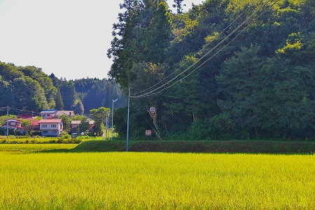
木の幹にくくりつけられた風袋様であらせられるぞよ。
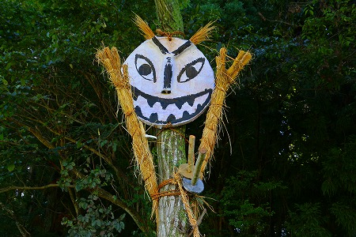
どすか、このお顔！かなりアグレッシブでしょ。
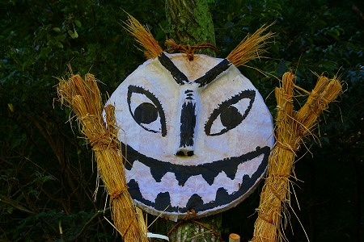
真ん丸い輪郭と釣り上がった目、Ｙ字型の鼻と眉。
そして何より
大きな口が特徴的で強烈な印象を放っている。
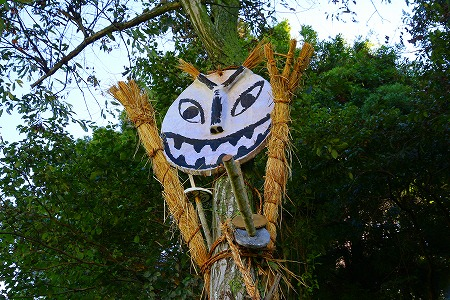
まるで通せんぼをしているかのようだ。
しかしその表情は笑っているようにも怒っているようにも見える。
横から見るとこの風袋様の構造がよく判る。
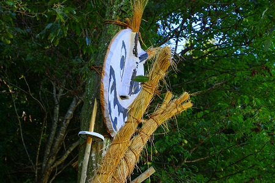
木の幹に顔と手を縛り付けてある。
いたってシンプルだ。
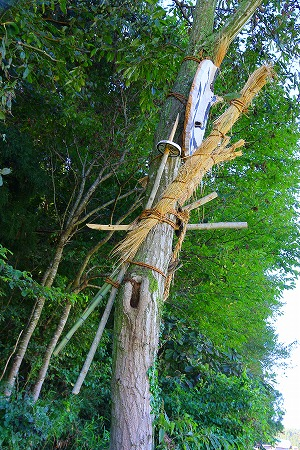
得物は大小の刀二本差し。
さらに槍の様なものを持っている。
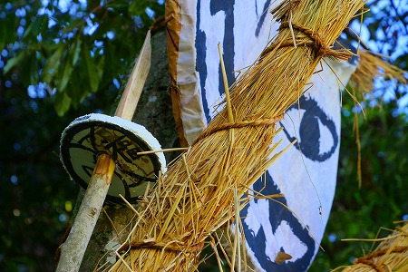
槍の鞘には福の字が書かれている。もちろん福貴作の「福」なのだろう。
刀に鞘があるのは当たり前として槍にまで鞘が付いている。
コレを見て思い出したのは、同じ福島県内の田村市にあるオニンギョウサマ。
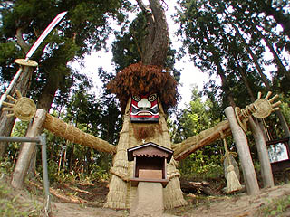
ここの槍にも鍔が着いていたなあ。
東北地方の広い範囲に伝わる
人形道祖神の亜種なのだろうなあ。
この風袋様、
台風や大風除けの神様なのだという。
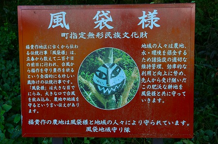
毎年、9月１日にこの神像は作られる。
この日は雑節の
二百十日と言われ、立春から数えて２１０日の前日にあたる。
台風や大風の多い日とされるこの日に風袋様を設置するのは、収穫直前の稲を守るために他ならない。
この習俗、寛政年間に中断したことがあったという。
その時期に大嵐で大きな被害を受けたためそれ以降200年間継続されている。
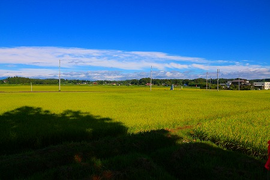
風袋様の目線から見た風貴作の風景。
見渡す限りの田んぼが広がっている。
…というのが風貴作地区の西側にある風袋様。
実はこの地区の東側にも風袋様があるのだ。
道祖神のようにムラの下と上に配置して外敵の侵入を防ごうというコンセプトなのだろうか。
のどかな農村地区を探し回って見る。
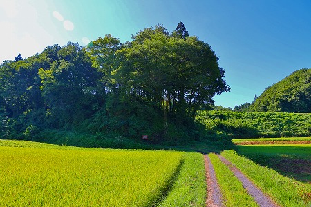
するとムラの逆サイド、東の林の中に風袋様がいた。
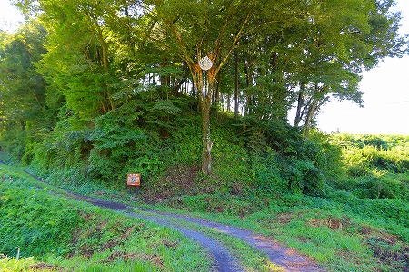
先ほどの風袋様とはまた違う顔だ。
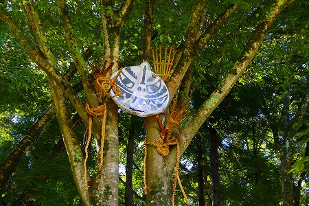
こちらの方がより図案的で眉や髭がカッコイイ。
ビニールで覆われているところを見ると毎年使いまわしているのだろうか。
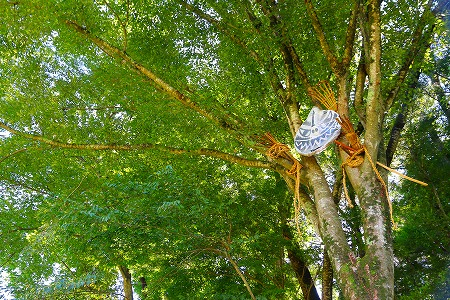
こちらも刀二本差しプラス槍の装備。
先ほどの風袋様に比べて藁で作った手の造作が細かい。
もっとも細かすぎて６本指になっちゃっているのが玉に瑕、だが。
こちらも特徴的なのは大きな口。
この巨大な口で台風や嵐を吸い込んでしまうのだという。
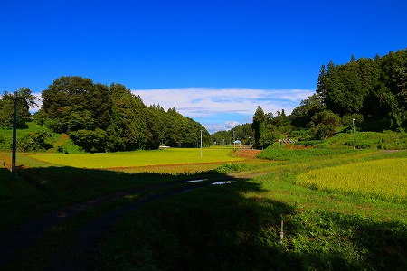
いやはや何とも頼もしい神様である。
風で稲穂の一部が倒れていた。
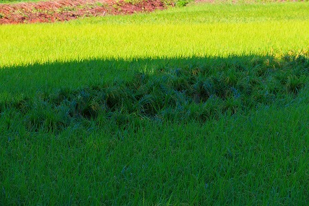
成程、風害は由々しき問題なのだろう。
ムラの北側にも風袋様の残骸が。
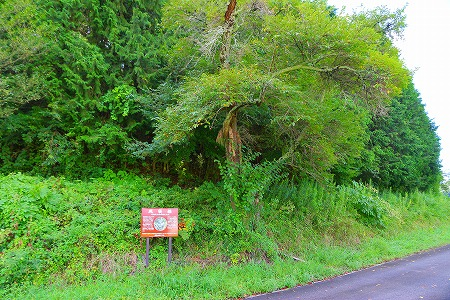
こちらは顔はなく、両手だけがだらんと木からぶら下がっていた。
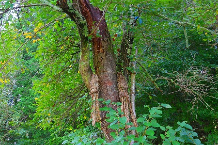
ムラに3つある、ということは上、下、一対で存在する道祖神とは違う意味合いなのだろうか。
いかんせん他に風袋様の像を設置する習俗がないので謎だらけだ。
他にも風袋様の痕跡がないかムラを巡ってみた。
コレは多分普通の道切り。
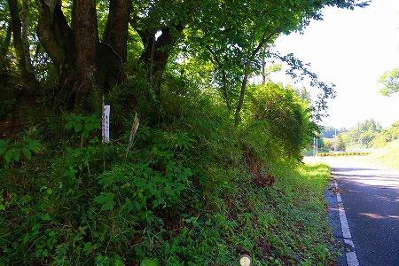
道端に御札が立てられている。
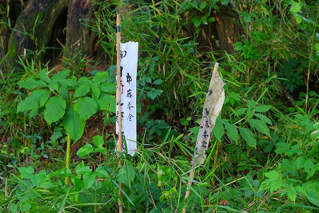
結局これ以上風袋様の痕跡は見つからなかった。
日本の土俗神の中でも抜群に強烈な顔だった。
まるで南洋の神像のようにプリミティブな迫力に満ちていたよ。